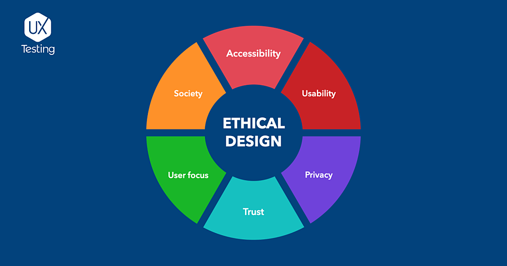

Ethical UX
Here are some ways to avoid dark patterns in your design and make sure they they remain ethical:

- Simplify the user experience.
- Provide as much transparency as possible.
- Design with accessibility in mind.
- Allow users to easily change or withdraw their consent.
- Respect user privacy and ensure data is protected.